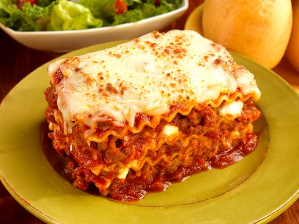

Metta's Famous Lasagna

Description:
Not much explaining needed.
It's lasagna made by Metta and its world famous.
It's so good I made an entire website dedicated to this dish. I think you get the level this stuff is at
but hey, this recipe is not open source, you need to pay me for this type
of quality information. I'm still figuring out how to link a paypal situation to this site but
until then cashapp me at $mettabeshay.
Ingredients
Polenta
- 4 cups water
- 1 ½ teaspoons Kosher salt, or to taste
- 1 cup of uncooked course-ground Polenta
- 1 tablespoon of butter
- ½ cup finely grated Parmigiano-Reggiano cheese
Filling
- 1 ½ cups ricotta cheese
- ⅔ cup finely grated Parmigiano-Reggiano cheese
- 4 ounces grated mozzarella cheese
- 1 teaspoon kosher salt, or to taste/li>
- ¼ teaspoon ground black pepper
- 1 pinch cayenne pepper, or to taste
- 1 large egg, beaten
- 2 tablespoons chopped Italian parsley
For Baking/Serving
- 1 tablespoon olive oil
- 3 cups hot prepared meat sauce, or more to taste
- 1 tablespoon chopped Italian parsley, or to taste
Steps
- Prepare polenta: Bring water and salt to a boil over high heat. Whisk polenta into the boiling water and continue whisking until it starts to thicken, about 1 minute. Reduce heat to medium-low and simmer, stirring often, until polenta is soft and has lost its grainy texture, 25 to 40 minutes.
- Remove polenta from the stove and quickly whisk in butter and Parmigiano-Reggiano cheese.
- Transfer polenta to a silicone baking liner (or oiled foil or parchment paper). Spread it out evenly almost to the edges into an 8x13-inch rectangle. Cover with plastic wrap and smooth out the top with your hands. Place a baking sheet on top and press slightly to further flatten.
- Slide the silicone liner and polenta onto the baking sheet and place in the refrigerator until firm, about 1 hour.
- Remove polenta from the refrigerator and cut, from one long edge to the other, into 8-inch long strips.
- Prepare filling: Stir ricotta, Parmigiano-Reggiano, mozzarella, salt, pepper, cayenne, egg, and parsley in a bowl until well combined
- Preheat the oven to 375 degrees F (190 degrees C). Grease a loaf pan with 1 tablespoon oil.
- Place one strip of polenta into the bottom of the prepared loaf pan. Spread 1/3 of the filling on top as evenly as you can. Top with about 1 cup hot meat sauce. Repeat polenta-filling-sauce layers twice more. Place the last piece of polenta on top, then gently shake and tap the pan to settle the contents. Place the loaf pan on top of a sheet pan to catch any spills while baking. Loosely wrap the top of the loaf pan with foil, making sure it's not touching the polenta.
- Bake in the preheated oven until bubbly, about 1 hour.
- Remove from the oven, discard foil, and let rest for at least 15 minutes.
- Divide onto 6 plates. Garnish with parsley and serve with additional sauce.